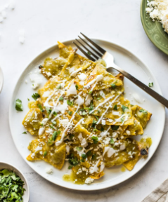
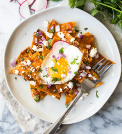
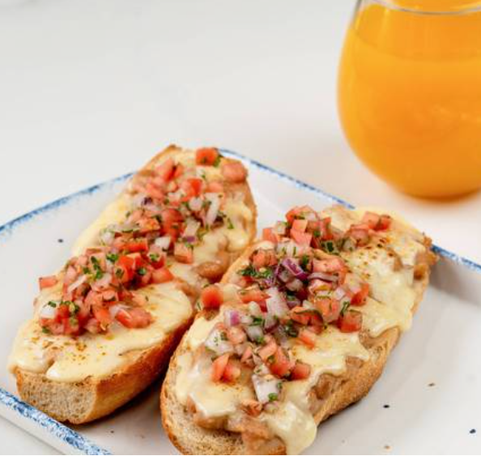
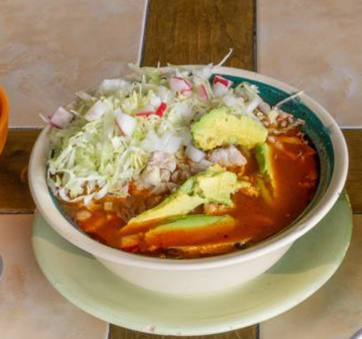
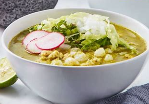
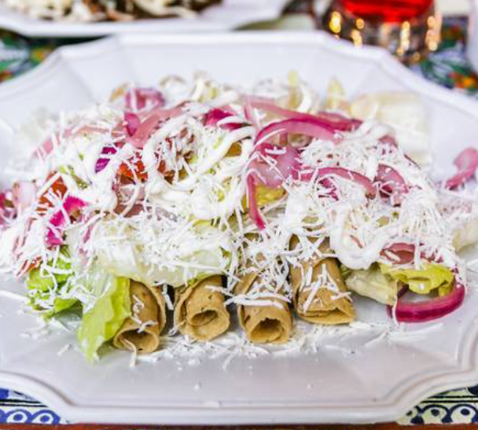
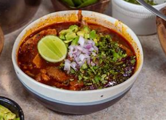
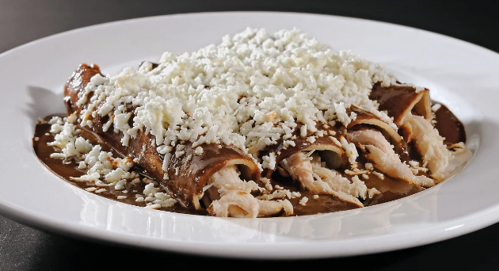
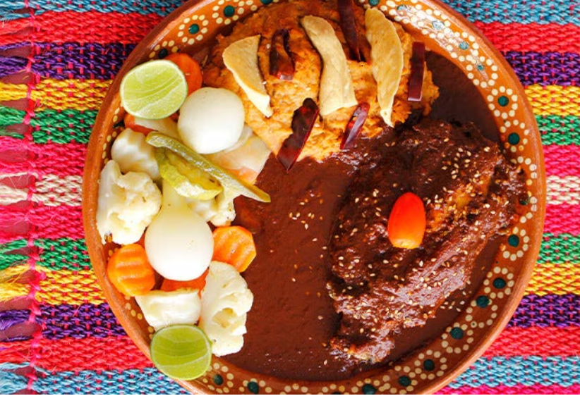

Chilaquiles verdes
$120.00
Totopos bañados en salsa verde,
acompañado de crema, queso y opcionalmente de
cebolla y cilantro.Puede servirse con huevo o pollo.
Añadir

Chilaquiles rojos
$120.00
Similar a los chilaquiles verdes,
se utiliza salsa roja.También se acompaña
con crema, queso y puede incluir huevo o pollo.
Añadir

Molletes (2pzas)
$100.00
Bolillos cortados a la mitad,
cubiertas con frijoles refritos, queso derretido
y salsa pico de gallo. Se sirven en porciones de dos piezas.
Añadir

Hot cakes (3pzas)
$124.00
Tres panqueques esponjosos, servidos
con miel, mantequilla y, a menudo, acompañados de fruta
fresca o tocino.
Añadir

Pozole Rojo
$130.00
Sopa hecha con granos de maíz nixtamalizado,
carne de cerdo y una base de caldo rojo hecho con
chiles secos.
Añadir

Pozole Verde
$130.00
Sopa hecha con granos de maíz nixtamalizado,
carne de pollo y una base de caldo verde hecho con
tomatillos y chiles verdes.
Añadir

Flautas de pollo (4pzas)
$110.00
Cuatro tortillas de maíz rellenas
de pollo desmenuzado, enrolladas y fritas hasta quedar
crujientes. Se sirven con crema, queso, lechuga y salsa.
Añadir

Menudo
$130.00
Sopa mexicana hecha con callos de res en
un caldo rojo a base de chiles secos. Se sirve con cebolla
picada, orégano, chile piquín y limón
Añadir

Huevos divorciados
$90.00
Dos huevos fritos servidos con dos salsas
diferentes: una salsa roja y una salsa verde. Se acompaña
con frijoles refritos y tortillas.
Añadir

Huevos rancheros
$90.00
consiste en huevos fritos servidos sobre una
tortilla de maíz y bañados con salsa de tomate, chile
y cebolla. Se acompaña con frijoles refritos y aguacate
Añadir

Enmoladas de pollo (4pzas)
$110.00
Cuatro tortillas rellenas de pollo desmenuzado,
bañadas en mole y espolvoreadas con queso fresco.
Se pueden servir con crema y cebolla.
Añadir

Mole en Arroz
$140.00
Plato de pollo cubierto con mole.
Se acompaña con arroz y a menudo se adorna
con ajonjolí.
Añadir
